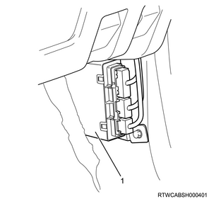

Function, structure, operation of body control (BCM with Keyless Entry)
1. Function, structure, operation of body control
BCM
BCM is an integrated control module with the following functions.
Keyless entry system
Power door lock (Central door lock)
Anti-theft system
Speed linked door locking (if so equipped)
SRS airbag linked door unlocking (if so equipped)
Tailgate unlock function
Rear wiper and washer function
Interior light activation function
Rear defogger timer function
Power window timer function
Self-diagnosis function
Note
- BCM input/output schematic diagram
Keyless entry system
The keyless entry system has the following features.
Power door lock system
Lock and unlock function by remote controller key operation
Remote controller key registration function
Answer back function
Interior light ON/OFF interlocking function
Half-closed alarm warning light function
The keyless entry function has the function as an entry device of a vehicle. When the corresponding button of the remote controller key is pressed, the door is locked/unlocked. The remote controller key realizes this function by sending radio waves to a receiver unit. The receiver unit detects the signal, and then perform the function that is requested by sending serial data message to the BCM.
Flasher unit operations and lighting of room lights are controlled as the response to the signal sent.
Caution
- The system may produce improper operations due to low battery of a remote controller key or a vehicle, or radiowave disturbance from after market devices such as power inverters or computers. The system may also produce improper operations due to radiowave disturbance in high-traffic areas.
Note
- Overview of the input/output of keyless entry
The keyless entry system consists mainly of the following items.
Remote controller key
BCM
Receiver unit
The BCM transmits lock and unlock signals received from the remote controller key to the door lock actuator through the receiver unit for each door.
The following functions will operate when the lock button on the remote controller key is pressed.
Locking of all doors
Answer back, 1 blink
Turning off the interior light
The following functions are activated when the unlock button on the remote controller key is pressed.
Unlocking of all doors
Answer back, 2 blinks
Interior light lighting
If doors are unlocked for approximately 30 seconds, they will be locked automatically.
Caution
- When performing door lock operations continuously using the remote controller key, wait for at least 1 second before performing the next locking or unlocking operation.
Remote controller key
The door can be locked or unlocked by operating the button within 10 m (33 ft) around the vehicle. Only 1 remote controller can be used at a time. If 2 or more remote controllers are operated at the same time, their operation will be unstable due to radiowave interference.

Replacement of internal battery in remote controller key
1. Remove the key holder from the remote controller key.
2. Open the cover using flat-head screwdriver.
3. Remove the transmitter.
4. Open the battery cover.
5. Remove the battery.
6. Install a new battery.
7. Perform installation in the reverse order of the removal.
- Cover
- Battery cover
- Transmitter
- Key
- Key holder
- Battery (CR1620)
- Battery holder
Power door lock system
The power door lock system consists of a door lock switch, door lock key switch, door lock motor, and BCM. The battery voltage is always applied to the BCM. Based on changes in door lock switch or door lock key switch signal input conditions, the BCM operates the unlock motor for approximately 1 second and locks/unlocks the doors.
Locking
All doors will lock when all the doors are closed and the lock side of the door lock switch is pressed, or when the doors are locked using the key cylinder on the driver side.
Unlocking
All doors will unlock when the unlock side of the door lock switch is pressed, or when the doors are unlocked using the key cylinder on the driver side. If the key is used for unlocking when the anti-theft system is operating, the doors will unlock with the remote controller key or the anti-theft alarm will sound until the ignition switch is turned ON.
Speed linked door locking (if so equipped)
When the vehicle is running, in order to ensure safety, the doors are automatically locked if the vehicle exceeds 20 km/h and the doors have not been locked by the driver. If the doors are locked by the speed linked door locking, the doors will be automatically unlocked if either the ignition switch is turned OFF or the key is removed after the vehicle has stopped. However, it is also possible to disable this function by using a scan tool.
When using a scan tool to change settings, follow the procedure shown below.
1. Connect a scan tool to the DLC.
2. Turn ON the ignition switch.
3. Select Diagnostics.
4. Select Body.
5. Select BCM.
6. Select Programming & Resetting.
7. Select BCM Data Setting/Change.
Note
- To change the speed linked door locking function settings, select Speed linked door locking, and change the settings.
- To change the settings for door unlocking using the key after the stopping the vehicle, select Door Unlocking Timing, and change the settings.
Tailgate unlock function
With the vehicle lock released, press the tailgate unlock switch so that the BCM drives the tailgate latch motor and unlocks the tailgate.
Anti-theft system
The anti-theft system consists of a BCM, anti-theft horn, anti-theft indication light, receiver unit, and remote controller key. This system operates when the engine hood and all doors are closed and the doors are locked using a correctly programmed remote controller key. Also, the doors are unlocked with the remote controller key or the ignition switch is turned ON.
The anti-theft system is designed to protect the vehicle and valuables from theft when the door and the engine hood of the vehicle are locked.
If anyone tries to open the door or the engine hood forcibly without using the remote controller key, the hazard lights flash and the horn sounds intermittently. The horn sounds for 30 seconds until the system stops automatically, and the hazard lights flash for 5 minutes.
Caution
- In order to activate the anti-theft function, close all the doors and use the remote controller key to lock the doors.
- When the door at the passenger side is opened in locked status and then the door is closed, an error alert is detected.
Note
- First 10 seconds
LED light up, test switch delay on
LED rapid blinking （2 Hz）, door or bonnet opened or system failure - After about 10 seconds
LED slow blinking, system on (0.5 Hz)

Activating the anti-theft system
Turn the ignition switch OFF.
Check that all doors and the engine hood are closed and lock the doors using the remote controller key.
The anti-theft indicator light will illuminate for approximately 10 seconds. The light will then start to flash slowly, indicating that the anti-theft system is activated.
Conditions for anti-theft buzzer operation
When the doors or engine hood are forcibly opened without the use of the remote controller key.
When the doors are unlocked using the door lock knob.
When the engine hood release handle is operated.
Turning off the anti-theft system
The doors are unlocked with the remote controller key or the ignition switch is turned ON.
If the alarm has sounded, it will stop once the ignition switch is turned ON.
SRS airbag linked door unlocking (if so equipped)
If a collision occurs while the vehicle is running, the SRS operating signals are read and the doors are automatically unlocked. At this time, the hazard light will flash in order to notify the surrounding area about the abnormality. To stop the hazard light from flashing, turn OFF the ignition switch, then turn it ON again.
Note
- The function may not activate due to the way that the collision occurs.
Interior light activation
The BCM activates the interior light. The interior light goes on when the Dome light is at DOOR position, any door is opened, or requested from the keyless entry system.
Or, when each room light is turned OFF, the afterglow function operates.
Afterglow light function operating conditions
The afterglow light will operate when the doors are closed and the ignition switch is ON.
When opening the doors with the key in the ignition
When removing the key with the doors closed
Rear defogger timer
The Rear defogger function is used to defog the rear window glass. When pressing the Rear defogger switch while the ignition switch is at ON position, the Rear defogger relay is operated and the indication light turns on, and then the Rear defogger operates. When the Rear defogger switch is pressed again, the defogger is stopped. Or, while the Rear defogger switch is ON position, the defogger stops automatically after operating for 10 minutes.
Power window timer
The power window timer function enables to open or close power windows within 45 seconds after the ignition switch is turned OFF. The BCM measures 45 seconds, and instructs the power window control unit to stop the power window motor operation. When any door is opened within 45 seconds, the BCM also instructs the power window control unit to stop the power window motor operation.
Rear wiper and washer function
When the rear window wiper and washer switch is turned from the OFF position to one position forward in the direction of the vehicle front with the ignition switch in the ON position, the relay wiper will turn ON, the rear wiper motor will be driven, and the rear wiper function will operate continuously. Turning the switch further will drive the rear washer motor, and the rear washer will operate together with the rear wiper. If the rear window wiper and washer switch is turned toward the vehicle rear from the OFF position, the rear washer will operate at the same time.
Self-diagnosis function
The self-diagnosis function of the BCM is set to the main body of the BCM. If each function of the BCM does not operate correctly, it performs trouble diagnosis and sets DTCs.
BCM location
The BCM is installed within the trim cover at the driver seat side.

- BCM
Receiver unit location
The receiver unit is installed within the instrument panel.
- Harness connector
- Receiver unit
- Screw
Note
- BCM system circuit diagram
Note
- BCM terminal layout

| Terminal No. | Signal name |
| A-1 | Ground (BCM) |
| A-2 | － |
| A-3 | － |
| A-4 | － |
| A-5 | － |
| A-6 | Receiver unit signal |
| A-7 | － |
| A-8 | CAN high |
| A-9 | Key reminder switch signal |
| A-10 | Ignition switch signal |
| A-11 | Engine hood switch signal |
| A-12 | Door switch signal |
| A-13 | － |
| A-14 | Receiver unit ground |
| A-15 | － |
| A-16 | Receiver unit power |
| A-17 | － |
| A-18 | CAN low |
| A-19 | Accessory switch signal |
| A-20 | Battery voltage (BCM) |
| Terminal No. | Signal name |
| B-1 | － |
| B-2 | － |
| B-3 | Door unlock key switch signal |
| B-4 | Tailgate unlock switch signal |
| B-5 | Tailgate switch signal |
| B-6 | Door unlock switch signal |
| B-7 | － |
| B-8 | － |
| B-9 | Ground (Power 1) |
| B-10 | Door unlock motor control |
| B-11 | Door lock motor control |
| B-12 | Door lock key switch signal |
| B-13 | － |
| B-14 | － |
| B-15 | Door lock switch signal |
| B-16 | Interior light control low side |
| B-17 | － |
| B-18 | Ground (Power 2) |
| Terminal No. | Signal name |
| C-1 | － |
| C-2 | － |
| C-3 | － |
| C-4 | Anti-theft indicator light control |
| C-5 | － |
| C-6 | Door open warning light control |
| C-7 | － |
| C-8 | － |
| C-9 | Rear defogger relay control |
| C-10 | Rear wiper relay control |
| C-11 | Rear defogger switch signal |
| C-12 | Rear wiper switch signal |
| C-13 | Anti-theft horn control |
| C-14 | Battery voltage (power 2) |
| C-15 | Battery voltage (power 1) |
| C-16 | Tailgate latch motor control |
| C-17 | Power window timer signal output |
| C-18 | － |
| C-19 | Answer back control |
| C-20 | － |
| C-21 | － |
| C-22 | SRS air bag active PWM signal |
| C-23 | Rear washer switch signal |
| C-24 | Door position switch signal |
| C-25 | Interior light control high side |